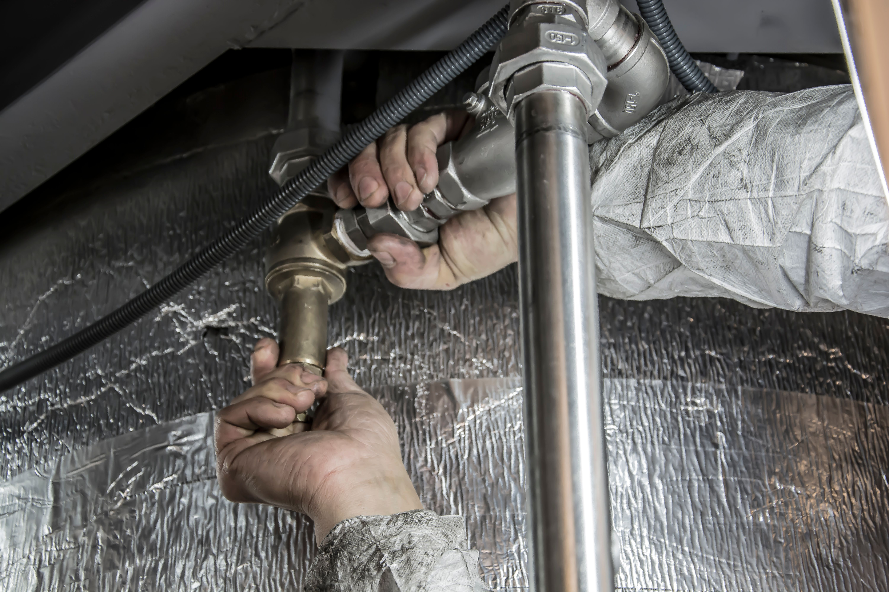

Plumbing Repairs
Assistance with common household plumbing problems and repairs.

Professional home plumbing solutions you can rely on. From repairs and maintenance to installations, Durban Home Fixing Plumbing is here to help.
Request a Plumbing ServiceDurban Home Fixing Plumbing provides reliable plumbing services for homeowners and families in Durban. Our goal is to provide practical, professional and dependable plumbing solutions for everyday household needs.
Assistance with common household plumbing problems and repairs.
Help with identifying and repairing household plumbing leaks.
Reliable maintenance solutions to help keep your home's plumbing working properly.
Get in touch with Durban Home Fixing Plumbing for your household plumbing requirements.
Make an Enquiry